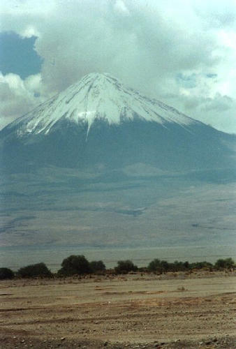
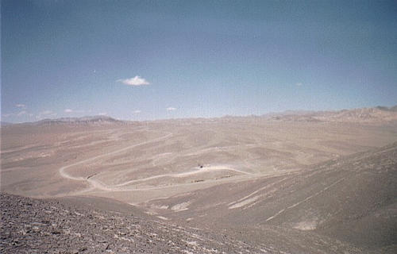
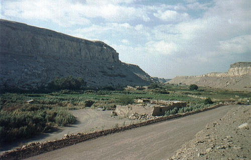
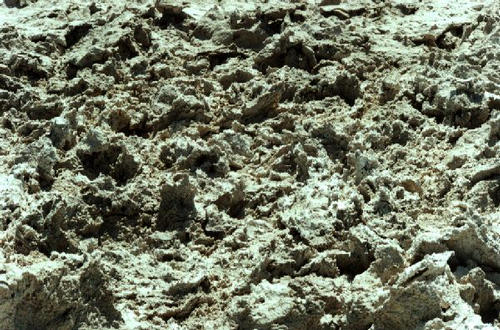

Deixando os andes pra trás e se adentrando no deserto, chegamos a San Pedro de Atacama, a cidade-oásis encravada no meio do nada. Lá é a base de operações no deserto, o lugar para comer, dormir, deixar as tralhas, abastecer o carro, comprar coisas, etc. Há opção de pousadas, hotéis e campings, para todos os bolsos.
Em San Pedro se compra livros, CDs, guias, mapas, blusas, artesanato, comida de supermercado, lembranças, dá pra ligar a cobrar pro Brasil via entelchile, e até acessar a internet! Paga-se por minuto de acesso.
De San Pedro se sai pra fazer todos os passeios e explorações. Em especial o Vale da Lua é o mais massa de todos.
A pukara de quitor também é legal e bem perto, dá pra ir a pé. O que falam muito e não é tudo aquilo é os gêisers dEl Tatio, que são jatinhos mixurucas, mas a viagem de madrugada até lá e o local são muito massa. E a furada total é os geoglifos de chug-chug.

Vulcão licancabur
Local: San Pedro de Atacama - CHILE - 2001
Qualquer coisa um pouco mais complicada que se precise de serviços ou produtos, a opção é Calama, cidade grande a cerca de 100 quilômetros a oeste de San Pedro, e como toda cidade grande, tudo o que você precisar, lá tem. Sim, é no meio do nada, e sim, é grande, tem asfalto, centro, aeroporto, shopping e tudo mais.
Perto de Calama, tem Chuquicamata, a maior mina a céu aberto do mundo. É impressionantemente grande. Visitas somente de manhã, em horário certo. Tem que se informar no local.
Saindo de chuqui em direção a antofagasta, há uma entradinha, com uma placa minúscula, quase imperceptível, para o parque de geoglifos de chug chug. Geoglifos são aqueles desenhos grandes feitos em montanhas, que se vê de longe.
Bem esse de chug chug é deprimente. Desenhos pequenos e que parecem que foram feitos há pouco tempo, para chamar turistas (como nós). De qualquer forma, é legal para subir as montanhas e curtir a paisagem. Aquele pontinho preto no meio da foto é o carro, lááá longe, cercado de nada por todos os lados.

Chug chug - O nada numa visão global
Local: Deserto de Atacama - CHILE - 2000
E mais ao norte de Calama, um passeio legal é visitar o vale de lasana, perto da cidade de chiu chiu. É, lá tem bastante destes nomes repetidos: chug chug, chiu chiu, ique ique, que indica plural nas línguas locais antigas. chiu chiu é um ponto de parada para ir até El Tatio, onde tem os gêisers.
Para chegar a essa vila lasana, tem uma estrada muito massa até lá, ladeando os morros e passando ao lado das casas do povo, com suas criações de llamas e cabras. No caminho também tem uma caverna que fizeram na pedra e algumas pinturas rupestres ao ar livre, nas encosta dos morros.

Vale de lasana, verde em meio ao nada
Local: Lasana - CHILE - 2000
Outra opção a sudeste de San Pedro é o salar de Atacama, que não vale a pena se for só pra ir na laguna chaxa, tem que pagar e não se vê muito. O massa é seguir em frente e ir até peine (pinturas rupestres) e lá virar à direita, cruzando o salar com o carro. Aí sim é massa. Cruzado o salar, pode-se aproveitar e ir ver o oceano atlântico em tocopilla ou descer pela panamericana até antofagasta, e voltar pela costaneira.
 Salar de Atacama
Salar de Atacama
Local: Deserto de Atacama - CHILE - 2000

Sal
Local: Deserto de Atacama - CHILE - 2000